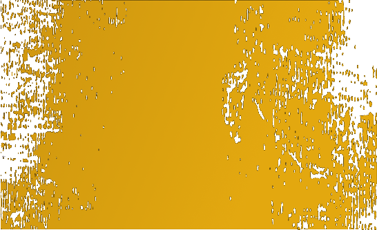
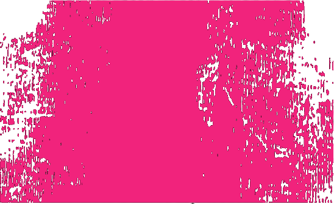
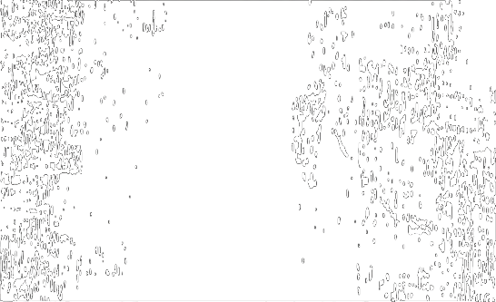
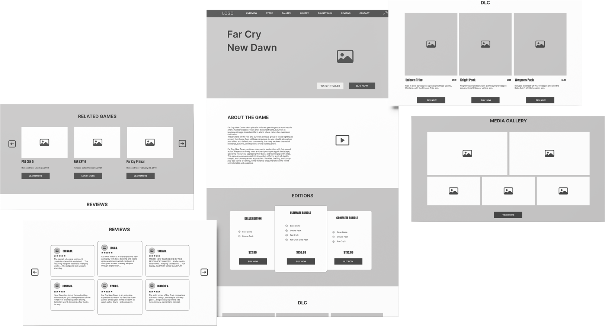
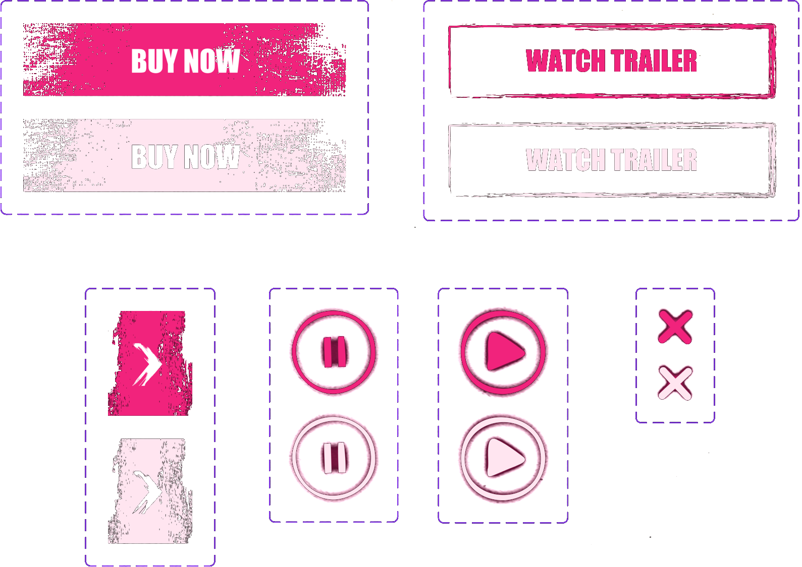
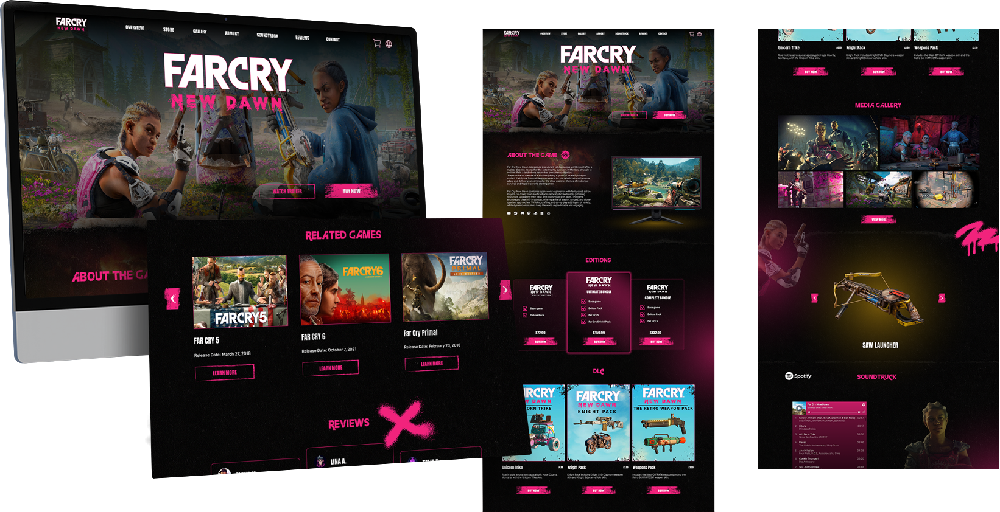

01 / Design system
Typography & colors
Typography
Inter
ABCDEFGHIJKLMNOPQRSTUVWXYZ
abcdefghijklmnopqrstuvwxyz
1234567890
Colors

#E3A80F
#F1237C
#FFFFFF
02 / Structure
Wireframing
Low fidelity

High fidelity

03 / Components
UI kit

04 / Web
Final UI design

05 / Play it
Prototype
Thanks for watching